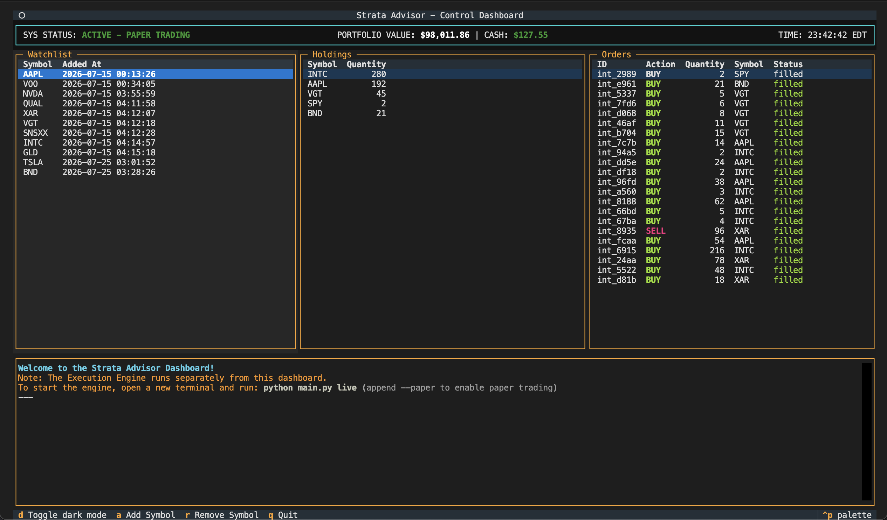

Architecture Highlights
- Meta-Layer (Budgeting): Dynamically allocates total portfolio capital across Core, Satellite, and Tactical budgets based on risk-adjusted market regimes.
- Strategic Layers (Core & Satellite): Buy-and-hold engines providing structural beta (Core) and dynamic momentum tracking (Satellite).
- Tactical Layer (Intraday): Machine-learning driven alpha signals utilizing short-term mean reversion, constrained by strict capital budgets.
- Tax-Aware Optimization: A mathematically rigorous filter that computes capital gains tax penalties on proposed reductions, actively suppressing sales if the tax drag exceeds the theoretical expected alpha.
- Advisor Mode: In compliance with API requirements, Strata Advisor does not automatically execute trades. It stages generated targets and trade intents to a dashboard requiring explicit end-user approval.
System Structure
The core advisory packages are separated by domains:
- advisory/capital_layer: Capital, API, and DB interactions.
- advisory/intraday: Tactical and Execution engines.
- advisory/shared: Authentication, Logging, and Broker integration (Schwab).
- advisory/strategic: Meta, Core, and Satellite strategies.
- scripts/: Utilities for running backtests, POCs, and debugging.
Execution & Testing
The system features a unified CLI to run live execution, TUI dashboard for staging orders, and historical backtesting.
The system maintains a comprehensive test suite (120+ tests) covering the core allocators, tax-aware orchestrator logic, and historical cost-basis tracking.